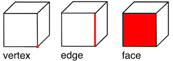
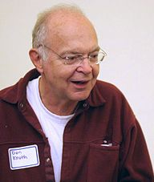
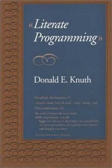

A Brief Introduction To Literate Programming With Geometrical Examples
Table of Contents
What is literate programming?
Literate programming sounds fancy, but it’s really just an explanation of a program along with the source code for the program. Some of the fancier tools for literate programming allow you to run the source code right then and there. They also let you manipulate the source code. We’ll see this fanciness when we look at Google Colab later.
A Simple Example
The following is simple C++ program that prints the number of edges of a cube. It uses Euler’s polyhedron formula \( V - E + F = 2. \) The \( V \) denotes the number of vertices, the \( E \) denotes the number of edges, and the \( F \) denotes the number of faces of a convex polyhedron.

Figure 1: An explanation of vertices, edges, and faces taken from Wikipedia.
#include <iostream> int getNumberOfEdges(int vertices, int faces) { return vertices + faces - 2; } int main() { int edgesOfCube = getNumberOfEdges(6, 8); std::cout << edgesOfCube << std::endl; return 0; }
History of Literate Programming
According to Wikipedia, literate programming was “introduced” by Donald Knuth.

Figure 2: A picture of Donald Knuth taken from Wikipedia. Licensed under CC BY-SA 2.5.
Knuth is one of the most famous computer scientists in the world. He made \( \TeX \) and invented big O notation. He literally wrote the book on literate programming!

Figure 3: A picture of Knuth’s book on literate programming.
Why should I care?
Literate programming is often used in academia for reproducible research. You can explain what your program does and your colleagues can test the program for themselves. It’s also very useful for creating tutorials.
Are there any other ways that literate programming could be used?
Yes! I think it should be used in teaching. A creative teacher could use literate programming to teach just about any subject. If properly introduced, programming is very conducive to experimentation and play which are, in my opinion, crucial elements of learning.
Programming can be especially useful for teaching and illustrating mathematical concepts. Indeed, a computer is basically a mathematical sandbox.
Two Examples Of Literate Programming
OK, that first example was pretty boring. Thanks to the folks who made the Three.js JavaScript library, and the folks at Google, we have two examples of literate programming that are a bit more interesting.
Make A Spinning Cube Using Three.js
To make a spinning cube using the Three.js JavaScript library, we first make a DOM element where the spinning cube will live and we include the Three.js library.
<div id="cubeCanvas" class="center-perfect"></div> <script src="https://threejs.org/build/three.js"></script>
We then use the Three.js library to create a cute little spinning cube.
// Create scene and camera. const scene = new THREE.Scene(); const camera = new THREE.PerspectiveCamera( 75, window.innerWidth / window.innerHeight, 0.1, 1000 ); // Create the renderer and set its size. const renderer = new THREE.WebGLRenderer(); renderer.setSize( window.innerWidth / 2, window.innerHeight / 2 ); // Create our cube and add it to the scene. const geometry = new THREE.BoxGeometry( 1, 1, 1 ); const material = new THREE.MeshBasicMaterial( { color: 0x00ff00 } ); const cube = new THREE.Mesh( geometry, material ); scene.add( cube ); // Set the camera's position. camera.position.z = 5; // Animate the cube. const animate = () => { requestAnimationFrame( animate ); cube.rotation.x += 0.01; cube.rotation.y += 0.01; renderer.render( scene, camera ); }; // Get the cube's canvas, add the renderer to it, and animate the cube. window.addEventListener('DOMContentLoaded', () => { const cubeCanvas = document.getElementById('cubeCanvas'); cubeCanvas.appendChild( renderer.domElement ); animate(); });
Look! A green spinning cube!
Google Colab
Google Colab is a popular literate programming tool for Python. Python is a very popular programming language for data science, machine learning, and scientific computing.
Other Tools For Literate Programming
There are tons of other tools for literate programming, but I’ll just mention a few that I’m familiar with.